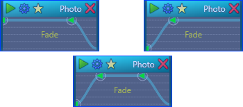

Add Or Modify
Displays the effect editor window where effects can be added for the primary selected section, removed, or modified.
Effect Toolbar
Shows or hides the effect toolbar.
Fade Graph
Displays a fade setting graph within all sections. The fade graph sets the opacity of video sections
and the volume of audio sections.
Setting Graph
Displays the selected setting graph within all sections having that setting. Use Select Graph Setting above
to select the setting to use.
Select Graph Setting
Displays a list of all variable effect settings currently in use and allows the selection of one setting
to graph within sections.
Preset Graphs
Displays a submenu listing basic, predefined graphs for quickly adjusting a setting graph.
Crossfade Sections
Sets the Fade Graph for selected sections that overlap in time so that the overlapping
end of one section is faded out and the overlapping beginning of the other section is faded in.
All Fade Graph points are reset and adjusted. If multiple sections overlap in time, then only the
section in the closest track is used to set the fade curve.

Crossfade ExampleCopy Effects
Copy all effects in a single section to the clipboard. If more than one section is selected, the effect are copied from
the primary selected section.
Paste Effects
Replaces all the effects in the selected sections with compatible effects in the clipboard. More than one section may be
selected to paste the same effects to all sections at once. Any effects currently in the sections are removed.
Append Effects
Adds the effects in the clipboard to all compatible selected sections. More than one section may be
selected to add the same effects to all sections at once. Effects currently in the sections are not affected.
See Also
Video Effects Editor
Audio Effects Editor
Getting Started